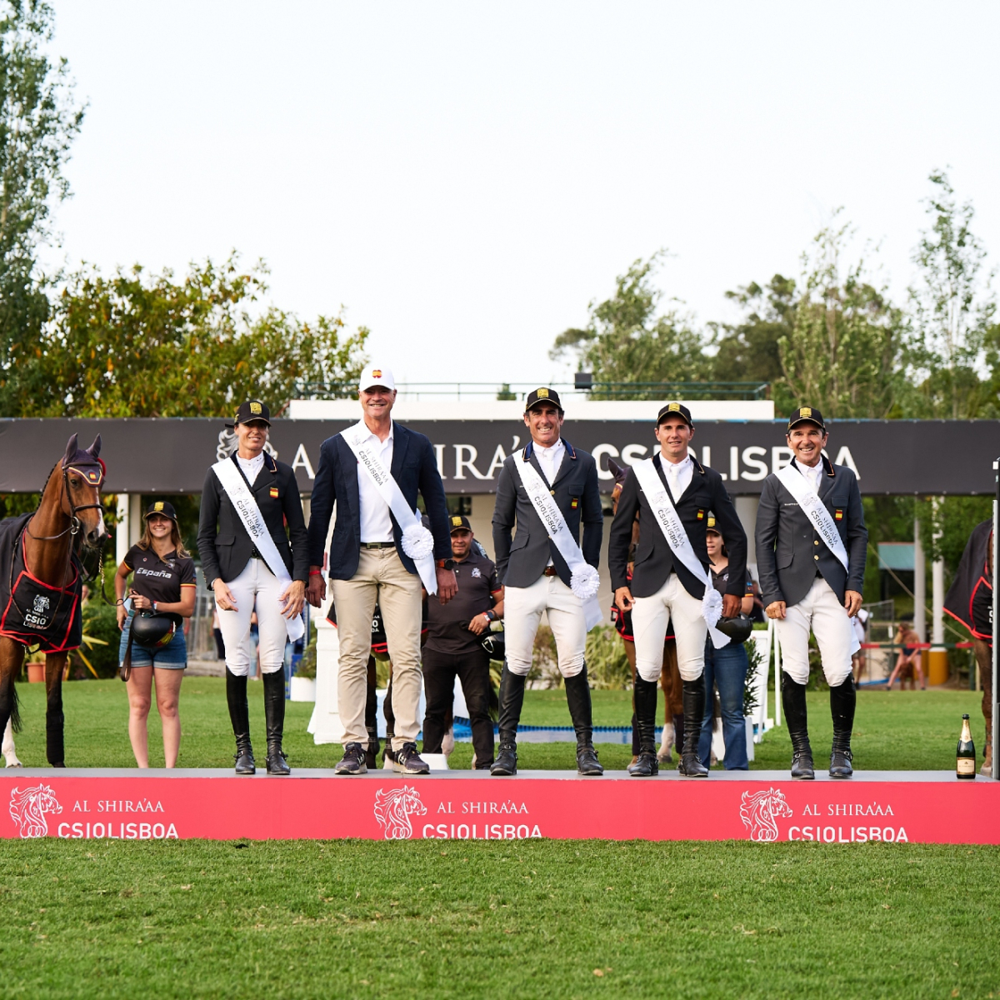

España suma 14 Copas de Naciones de Lisboa con cuatro triunfos desde el año 2000
El equipo español conquistó por decimocuarta vez en su historia la Copa de Naciones del CSIO3* de Lisboa, disputada en el hipódromo de Campo Grande. Desde la temporada 2000, los jinetes españoles han subido cuatro veces al primer cajón en la capital portuguesa.

Foto: objetos-xlk.estaticos-marca.com
España se impuso en una Copa de Naciones muy disputada que se resolvió en desempate, sumando así su decimocuarto triunfo histórico en Lisboa. El equipo español, formado por Pilar Cordón, Jesús Garmendia, Kevin González de Zárate y Pello Elorduy, confirmó el buen momento del salto nacional en el tradicional CSIO3* portugués, celebrado en el histórico hipódromo de Campo Grande.
Desde el año 2000, los jinetes españoles han conquistado esta Copa de Naciones en cuatro ocasiones. El primer triunfo del siglo XXI llegó en 2007 con Ricardo Jurado, Luis Astolfi, Gonzalo Testa y Sergio Álvarez Moya. Posteriormente, España encadenó dos victorias consecutivas en 2015 y 2016, con equipos formados por Alberto Márquez Galobardes, Gerardo Menéndez, Laura Roquet e Iván Serrano el primer año, y por Manuel Fernández Saro, Paola Amilibia, Sergio Álvarez Moya y Eduardo Álvarez Aznar el segundo.
El triunfo de 2026 supone la cuarta conquista española en Lisboa en lo que va de siglo, consolidando al CSIO3* de la capital portuguesa como una de las citas más destacadas del calendario de Copas de Naciones para el salto español.
— Redacción de Hípica al Día